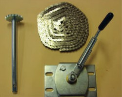

Original catalog photo · page 7
Swing arm system / PART #SA11668
Ground-level crank box kit
Use the part number and diagram reference to discuss a replacement with Precision Tarp. The team will confirm compatibility with your equipment.
Order unitIndividual item
Diagram referenceCatalog photo listing
Shown with part number SA11668 in the catalog photo caption; not listed in the website replacement-parts table. Confirm current availability.
Add to quote & reviewPricing and availability are confirmed by the team. This prepares an inquiry; it does not place an order.
Find it in the system.
This part is listed in the catalog photo captions; confirm its position with the team. Reference numbers identify diagram positions, not order quantities.
 Open full-size diagram
Open full-size diagram